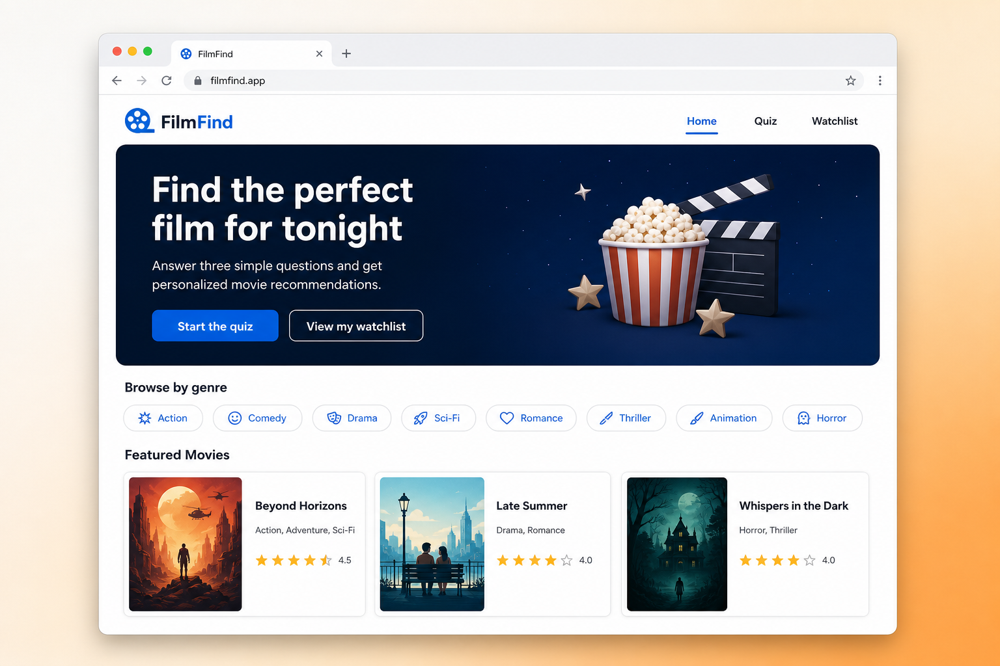
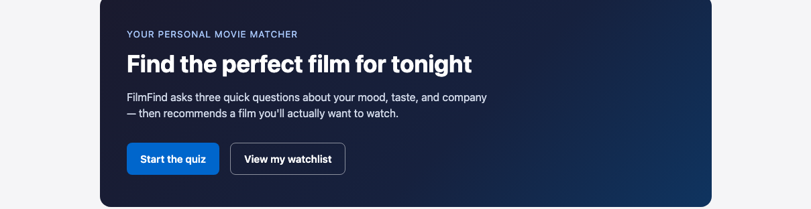
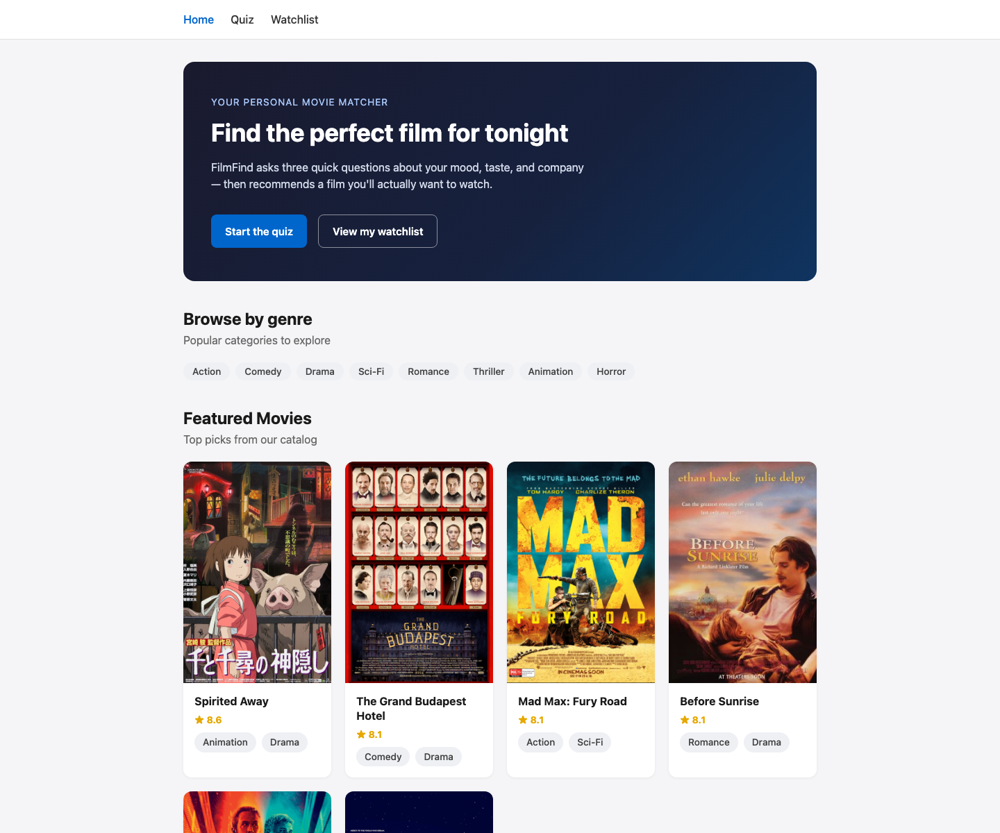
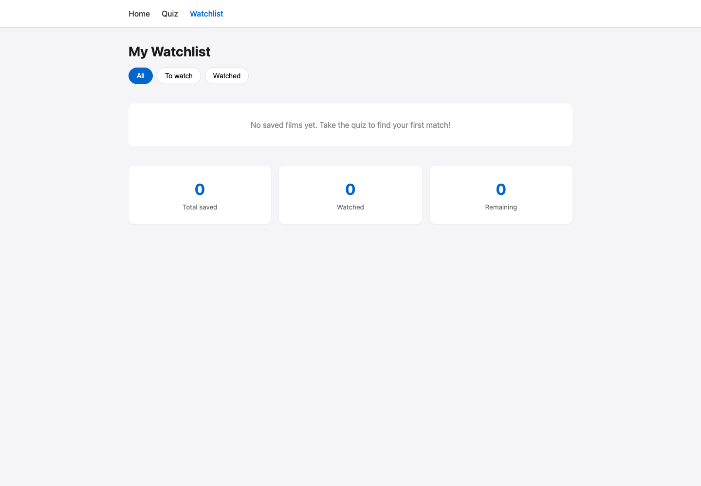
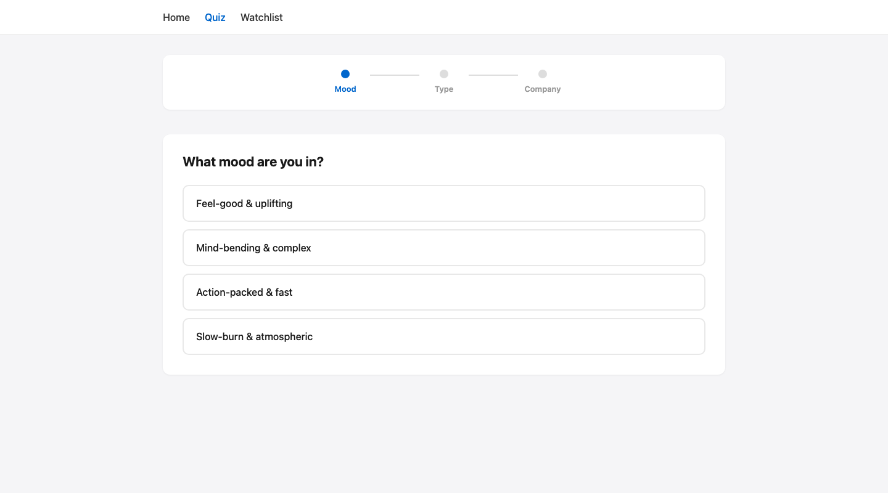

A mood-based movie quiz that recommends films and saves picks to a personal watchlist.
Role
Product Designer & Developer
Timeline
2026 · Prototyping
Tools
HTML, CSS, JavaScript

Overview
MovieMatcher is a lightweight film recommendation app I designed and built for ARTGR 5840. It helps indecisive viewers pick a movie in under a minute by asking three questions about mood, film type, and company, then surfacing a scored match from a curated catalog. I owned the full experience — quiz flow, recommendation engine, watchlist persistence, and responsive UI — using plain HTML, CSS, and JavaScript with no framework dependencies.
Challenge
Streaming libraries are overwhelming; most people spend more time browsing than watching. I needed a focused prototype that felt personal without requiring accounts or a backend. The constraints were clear: four routes (home, quiz, result, watchlist), a 12-film catalog with real metadata, localStorage for saved films, and a matching algorithm transparent enough to explain in a case study.
Solution
I shipped a multi-page static app with a stepped quiz UI, progress tracker, and auto-advance on answer selection. A weighted scoring function ranks films by mood, type, and company tags, returning the top match plus three "you might also like" suggestions. The result page shows poster, rating, genres, and synopsis with save-to-watchlist and try-again actions. The watchlist supports filter tabs (all, to watch, watched), toggle watched status, and summary stats. The home page adds genre browsing and a featured grid sorted by rating.
Process
1User Flows
2Quiz UX
3Matching Logic
4Watchlist
I mapped the four-page flow first — home discovery, quiz questions, result reveal, and watchlist management — then built shared modules for movie data, localStorage helpers, and poster fallbacks when images fail to load. The quiz received the most iteration: radio options with selected states, previous/next navigation, and a progress stepper that mirrors the three-question arc. Matching logic lives in a single scoreMovie function with tie-breaking by rating. Popup confirmations and empty states keep the watchlist feel complete even with zero saved films.
Style guide
MovieMatcher pairs a soft gray page field with white cards and a navy hero gradient. System UI typography keeps the layout light; blue drives primary actions, sky-blue accents the hero eyebrow, and gray pills handle genre tags so posters stay the focal point.
Color palette

Palette reference from the home hero — navy field, sky accent, and primary blue CTA
Navy gradient · hero field
Blue · primary action
Sky · hero eyebrow
Gray · page background
Mist · genre tag
White · card surface
Typography
MovieMatcher
Section heading · system bold
Body copy uses system UI at 16px with comfortable line height for quiz options and film synopses.
Components
Start the quizView watchlistComedy
Gallery
Three screens trace the core journey — home discovery, quiz flow, and watchlist management.

Home — hero CTA, genre browse, and top-rated featured films

Watchlist — filter tabs, saved films, and summary stats

Quiz — final step before generating a personalized match
Outcomes
MovieMatcher demonstrates end-to-end interaction design with a real recommendation engine and persistent client-side state. The app runs from any static file server, loads in under a second, and degrades gracefully when poster URLs are unavailable. Key learnings: constraining the catalog to 12 films made scoring explainable, and auto-advancing the quiz reduced friction without hiding the progress model. Next steps would include TMDB API integration, streaming availability links, and shareable result cards.
Deployment
The app is a static multi-page site served from plain HTML, CSS, and JavaScript files. No build step or backend is required — open index.html via a local server to explore every route.